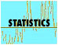
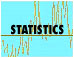

| |
Censoring: Planet host stars
The CASt dataset
censor.dat
Astronomical background
The following is a common situation in observational
astronomy. A previously identified sample of objects (stars,
galaxies, quasars, X-ray sources, etc.) are observed at some new
wavelength or for some new property. Some of the target objects
are detected and the value of the new property is measured (with a
known measurement error), while others are not detected. These
are assigned an upper limit to the value of the property based on the
uncertainty of the unsuccessful measurement. The result is
new column in a multivariate database where the rows represent the
objects and the columns represent values of various properties.
The new column has measured values with errors, and upper limits.
Statisticians call these "left-censored" data points. Many
astronomical studies encounter such problems, particularly in
extragalactic astronomy.
A large suite of statistical methods have been developed to
treat right-censored datasets because these frequently arise in
"survival" studies; that is, examination of how long a population
"lives" under various situations when the experiment is stopped before
all members of the population have "died". This situation arises
in actuarial (where the objects are ordinary people), industrial
reliability (where the objects are often manufactured products), and
biomedical studies (where the objects are usually ill people or test
animal samples). During the 1980-90s, survival analysis methods
were adapted for use in astronomical surveys with nondetections.
The ASURV
code, used in several hundred astronomical studies to date, implements
a number of survival methods: the Kaplan-Meier univariate maximum
likelihood estimator; Gehan and other two-sample tests; generalized
rank correlation coefficients for bivariate problems; and bivariate
linear regressions.
Astronomical censoring problems often differ from those
encountered in ordinary survival applications is various ways:
censoring is not restricted to a single dependent variable but can
occur anywhere in the multivariate dataset; a point can be
simultaneously censored in several properties; distance-dependent
censoring produce non-random censoring patterns; detected points have
heteroscedastic measurement errors; the censored values are imprecise
because they are based on the measurement errors. Despite these
problems, survival methods are often used because they overcome much of
the bias due to nondetections.
Dataset
Here we present a censored dataset from stellar astronomy
where the authors seek differences in the properties of stars that do
and do not host extrasolar planetary systems. It had already been
established that the probability of finding a planet is a steeply
rising function of the star's metal content, but it was unclear whether
this arises from the metallicity at birth or from later accretion of
planetary bodies. This study focuses on the abundances of the
light elements beryllium (Be) and lithium (Li) that are thought to be
depleted by internal stellar burning, so that excess Be and Li should
be present only in the planet accretion scenario of metal
enrichment.
The dataset and figures below are obtained
from the following paper:
Are beryllium abundances anomalous in stars with
giant planets? N. C. Santos, G. Israelian, R. J. García
López, M. Mayor, R. Rebolo, S. Randich, A. Ecuvillon, and C. Domínguez
Cerdeña; Astronomy & Astrophysics, 437, 1086-1096 (2004)
The columns of the dataset are:
- Star name
- Sample. Type=1 indicates planet-hosting stars.
Type=2 is the control sample
- Teff (in degrees Kelvin) stellar surface
temperature
- log N(Be), log of the abundance of beryllium scaled to the
Sun's abundance (i.e. the Sun has log N(Be)=0.0).
- Measurement error to log N(Be) based on model-fitting of
the observed stellar spectrum
- log N(Li), log of the abundance of lithium scaled to the
Sun's abundance
The dataset consists of 39 stars known to host planets
(plotted as
filled circles) and 29 stars in a control sample (open circles).
Due to internal stellar processes, Be abundances are correlated with
stellar mass which is traced by stellar surface temperature ("effective
temperature" or Teff). Regression lines of the
detections only
(top panel) show a slight elevation in Be abundance for planet hosting
stars, but this difference evaporates when a Buckley-James regression
line is considered that includes the effects of censoring (bottom
panel).
The scatter plot below shows that Be and Li abundances are
interdependent in a complicated fashion, but little difference is seen
between the planet-hosting and control samples.
Statistical exercises
- Use standard univariate survival analysis methods to
onstruct Kaplan-Meier distributions of Be and Li abundances for the
planet-hosting and control samples. Find means and medians, and
apply two-sample tests for differences.
- Perform the same but with heteroscedastic weighting for the
Be abundances.
- Apply bivariate correlation tests and linear regressions to
the Be-vs-Li plots shown above. Note that ASURV implements the
Brown, Hollander & Korwar generalized Kendall's tau that permits
censoring in both variables.
- Extend bivariate survival methods to the multivariate
case. See the Akritas & Siebert trivariate partial
correlation coefficient for multiply censored data based on
Kendall's tau.
|

 
